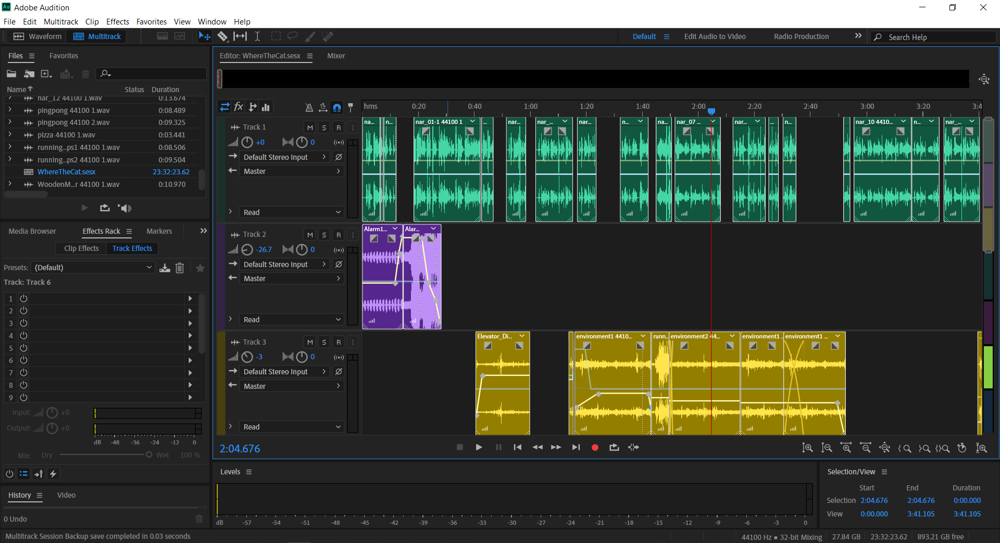

We had a lot of different ideas swirling around for our soundwalk. At first we were thinking of doing some sort of secret mission esque thing, but that kind of fell through. One of the big debates we had was whether we wanted a more abstract soundwalk (like 9:09) or something like the Passing Strangers sound walk where someone says "go and do this thing".
Eventually, we latched onto an idea provided to us, in passing, by Nick Grant about a "cat cafe". This was mostly because Katie and Stacey love cats, but as always it's best to make art that's related to what you love.
After we had the idea decided, the second part was building the story. This process evolved in tandem with figuring out where in the physical ITP space we wanted to explore -- one good piece of advice we received was to not use elevators, so we decided we could just start in the elevator lobby on the fourth floor. After this we looked through some of the sounds we'd collected and based the stops in our sound walk on those: the wooden mirror, the ping-pong table, the shop and finally to the kitchen.
Once we had it all plotted out, we wrote up the narration, where we would tell people where to go and what to pay attention to. Schuyler and Stacy recorded all the narration and sounds that were needed for the new script (which we didn't already have), and then Katie edited them together in Adobe Audition.
After this we had a rough draft, and we spent the next day testing it out. What we found the first go through is that some of the timings were off, and we needed to adjust how long the time between some of the narration was. We were also a bit worried that people wouldn't be able to figure out where to go, so we tweaked a little bit of the narration.
Finally, we test ran it on Nick Grant, who'd been the genesis of the idea, and he declared it a success!
We definitely had the most... casual/humorous/light-hearted of the sound walks. I think I was certainly influenced by the soundwalk I went on, passing strangers, which was much more concrete than the other soundwalks. We also were the group with the most amount of people, and it seems to me that the more people you have collaborating on your project (assuming equity of participation) the more concrete and less personal your work is going to be, as a general rule.
I'd definitely be interested in exploring a more abstract soundwalk -- I really liked some of the sense hunt content. One of the things I liked that we did were the props, as I like the idea of interacting with the environment a bit more directly, though I understand that might limit the "timelessness" of the soundwalk, not that ours isn't relatively dated in the first place.
Comments? Questions? Concerns? Email me here!